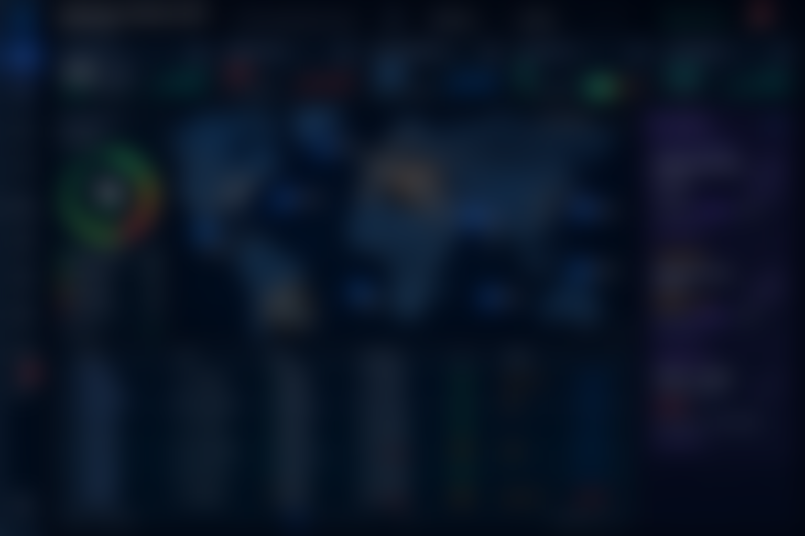

What Is Ship Management Software?
Ship management software is the integrated system ship owners, technical managers and operators use to run a fleet from one place — replacing the patchwork of spreadsheets, email chains and disconnected single-purpose tools that most vessels still rely on. A complete platform spans four domains: technical (maintenance, spares, defects, class surveys), crewing (certificates, rotation, payroll, rest hours), commercial (chartering, voyage estimation, laytime and demurrage) and compliance (ISM, MLC, SHEQ and emissions).
The decisive feature at sea is not any single module — it is one dataset, synchronised between office and vessel, that works offline. A ship that loses connectivity mid-ocean must keep recording maintenance, rest hours and stock movements, then reconcile cleanly when the link returns. Volaxin is built around that reality.
The average vessel runs six to ten separate software tools that do not talk to each other. Every integration gap is re-keyed data, a reconciliation delay and an audit risk. A unified platform removes the seams.
Eleven Modules, One Platform
Each module below is a full product in its own right — and every one shares the same data, users and offline engine. Explore the dedicated pages:
Document Management (DMS) and a drag-and-drop Custom Reports builder complete the eleven, threading controlled documents and cross-module KPI dashboards through every workflow above.
Why One Platform Beats Best-of-Breed Silos
- No integration tax. When maintenance, spares, procurement and crewing share one database, completing an overhaul decrements stock and raises a requisition automatically — no CSV exports between vendors.
- One version of the truth. Superintendents, technical managers and masters see the same live figures per vessel and across the fleet, not four dashboards that disagree.
- Audit-ready by design. ISM, MLC, PSC, SIRE 2.0 and RightShip evidence is a by-product of daily work, not a scramble before inspection.
- Lower total cost. One contract, one login estate, one training curve — versus licensing, integrating and maintaining six systems.
- Faster rollout. Fleet-standard libraries applied once, then varied per vessel, instead of configuring each tool separately.
Built for Every Fleet Segment
Volaxin serves technical and commercial managers across ship types: tankers (crude, product, chemical, LNG/LPG), bulk carriers, container ships, general cargo, offshore and OSV, and specialised and passenger vessels. Whether you are a single-vessel owner, a third-party ship manager running mixed fleets, or an in-house technical department, the platform scales to the estate you operate.
| Role | What Volaxin Delivers |
|---|---|
| Ship owner / operator | Fleet-wide cost, compliance and performance visibility with one login |
| Technical superintendent | PMS, defects, dry-dock and class-survey control across every vessel |
| Crewing / HR manager | Certificate expiry, rotation, payroll and MLC rest-hour compliance |
| Commercial / chartering team | Voyage estimation, laytime, demurrage and post-fixture P&L |
| HSEQ / DPA | Incidents, audits, ISM/ISPS evidence and vetting readiness |
| Master & chief engineer | A fast, offline due-list and reporting they can actually work from |
How to Choose Ship Management Software
Cut through vendor demos with the criteria that actually predict success on board:
| Criterion | What to Verify |
|---|---|
| Offline resilience | Full functionality with zero connectivity and conflict-free auto-sync over VSAT / Starlink |
| True integration | Native links between PMS, inventory, procurement, crewing and compliance — not exports between silos |
| Class & regulatory fit | PMS scheme approvals, MLC / STCW rest-hour logic and EU ETS / FuelEU / CII reporting built in |
| Usability at sea | A due-list a relief officer can run after a short handover; mobile job completion in the engine room |
| Data migration | Structured import of existing hierarchies, histories, certificates and counters |
| Security | Encrypted sync, role-based access, audit trails and IMO cyber-risk (MSC.428(98)) alignment — see our Security & Trust page |
For a vendor-neutral shortlist and scorecard, see our 2026 ship management software comparison & buyer's guide. For the maintenance-specific version of this checklist, see our planned maintenance system guide.
See your whole fleet in one platform
Book a free, no-obligation demo of Volaxin Maritime Suite. We will map your current tools onto one dataset and show maintenance, crewing, chartering and CII compliance working together — online and offline.
Request a DemoFrequently Asked Questions
What is ship management software?
An integrated platform for running technical, crewing, commercial and compliance operations across a fleet — maintenance, spares, procurement, crew, rest hours, safety, chartering, navigation and emissions — synchronised between office and vessel, including offline at sea.
What is the difference between ship management and fleet management software?
They overlap heavily. Fleet management stresses fleet-wide visibility and position tracking; ship management adds the deep per-vessel technical, crewing and compliance workflows. Volaxin covers both.
Does it work offline on the vessel?
Yes — each ship runs fully offline and reconciles automatically with the office when connectivity returns, with no duplicated records.
Can it replace several separate systems?
Yes. Eleven modules that are usually separate PMS, crewing, procurement, chartering and emissions tools run as one platform on one dataset.
Is it suitable for small and large fleets?
Yes — from single-vessel owners to fleets of hundreds of ships, with fleet-standard libraries and vessel-level variations.